Saúde & Foco
Esportes
Manter o corpo ativo faz parte da minha rotina. Treinar com disciplina ajuda a fortalecer o físico, melhorar a resistência e manter a mente focada no dia a dia.
Saiba maisMe chamo Álvaro Henrique tenho 20 anos, moro em Brasília DF. Para começar gosto muito de jogar, tanto no mobile e PC, sempre gostei desse mundo dos jogos, e com o tempo fui descobrindo coisas novas alem de somente jogar naquele aparelho, vi que dava para fazer muitas coisas com aquilo em minhas mãos, não somente para entreterimento. Vou falar um pouco sobre mim do que eu gosto meus e hobbies
Gosto muito de tênis e me apaixonei por eles tem menos de 2 anos. Nunca tive interesse neles usava o que meus pais compravam, mas isso mudou quando vi um simples video de como comprar tenis mais barato e com qualide absurda diretamente da China por menos de X valor (500 reais por exemplo), num tenis que custaria facil mais de 1k no Brasil
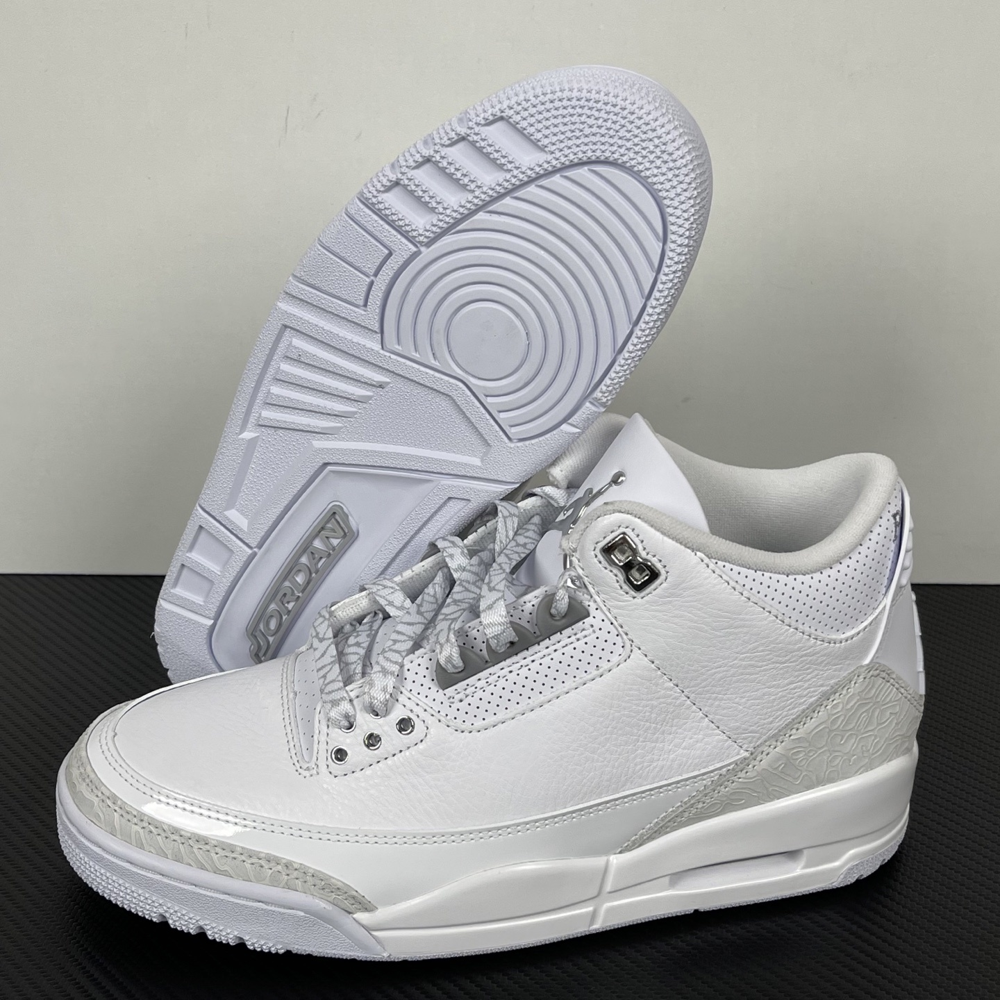
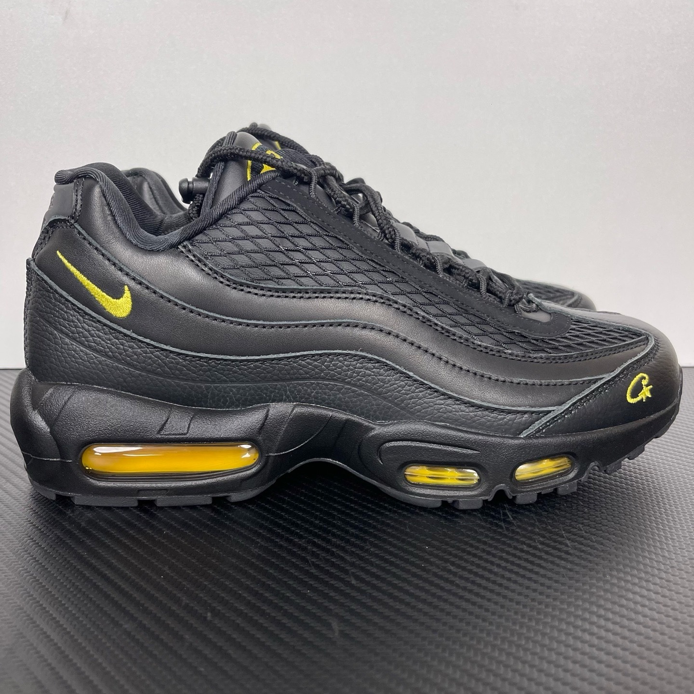
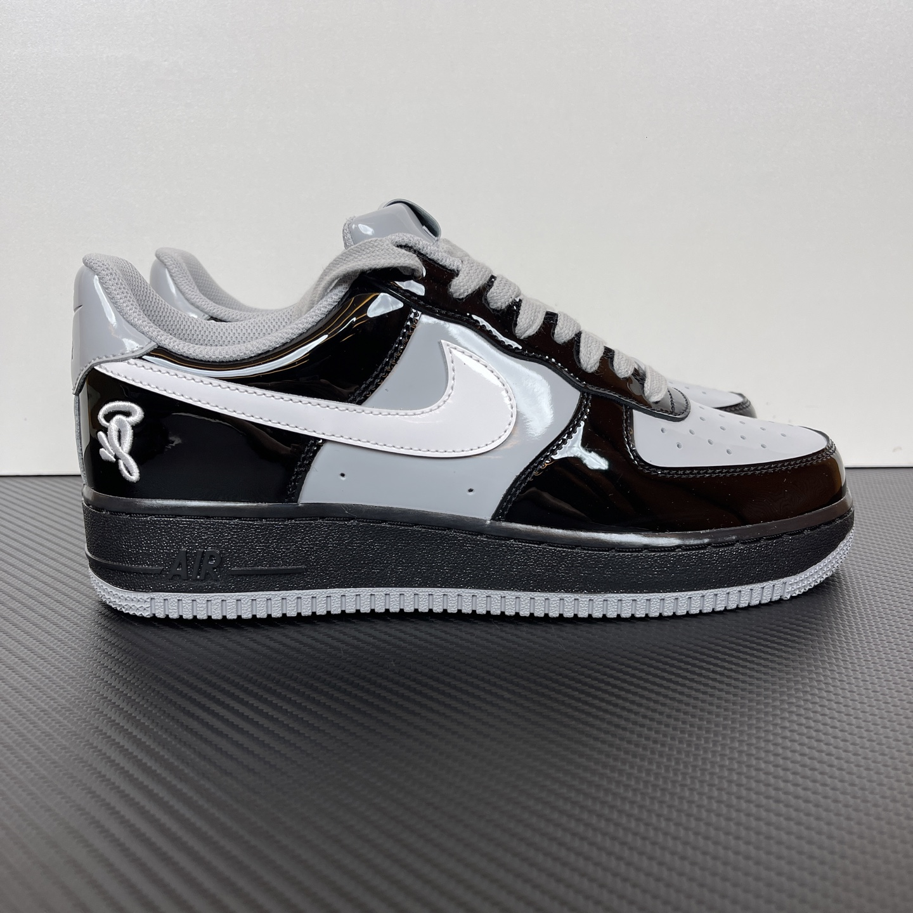
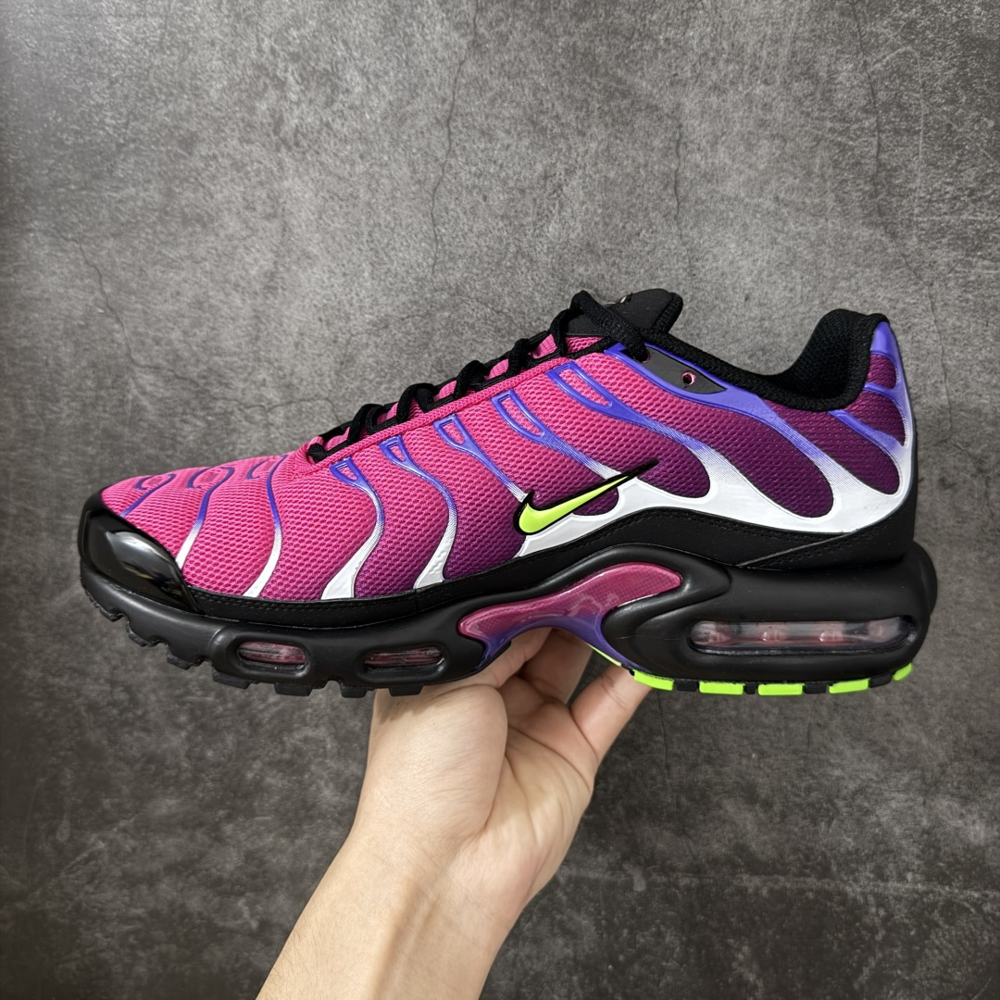
E o que me fez apaixonar por eles foi pelo simples fato da variedade que tem disponivel, são varios e varios modelos para todo tipo de gosto e estilo.
Comecei a gostar de carros quando comecei a acompanhar um Youtuber chamado Renato Garcia, assistindo os videos dele mostrando seu dia a dia projetos e seus carros e motos comecei a pesquisar mais sobre, ir a eventos pessoalmente e fui gostando cada vez mais e mais.
Saiba mais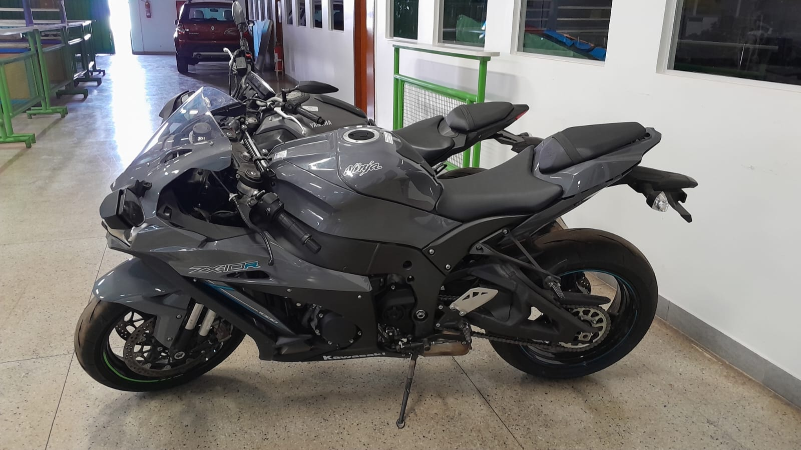
Comecei a gostar de motocicletas juntamente com os carros acompanhando o mesmo Youtuber, mas diferente de carros eu não fui muito a eventos desse tipo, vejo mais nas ruas e no meu dia a dia. Mas gosto bastante desse mundo.
Eventos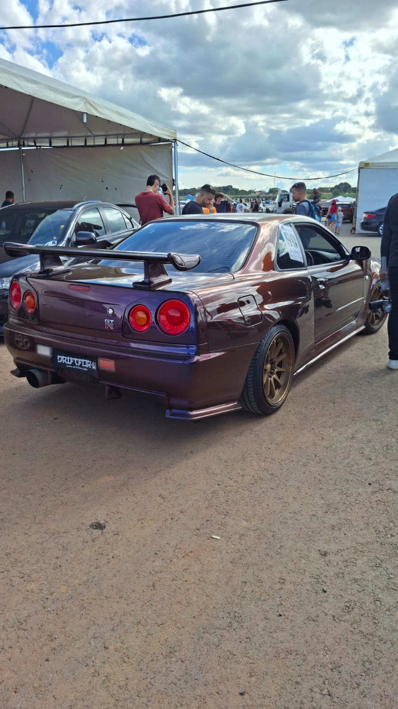
Comecei a ir em eventos neste estilo como eventos de Drift, Track Day, exposição, corrida etc.. Bom que onde eu moro tem muitos eventos, praticamente todo mes tem um, e Brasília e a 2° Cidade do Brasil que tem mais eventos nesse ramo perdendo somente para São Paulo. Inclusive em um desses eventos tive o prazer de ver pessoalmente um Skyline R34 Midnight Purple um dos meus sonhos que achei que nunca ia ver.
Ver projetosManter o corpo ativo faz parte da minha rotina. Treinar com disciplina ajuda a fortalecer o físico, melhorar a resistência e manter a mente focada no dia a dia.
Saiba maisSempre fui apaixonado pelo universo dos games. Foi jogando e explorando diferentes plataformas que despertei minha curiosidade pela tecnologia e pelo que dá para criar com ela.
Ver favoritos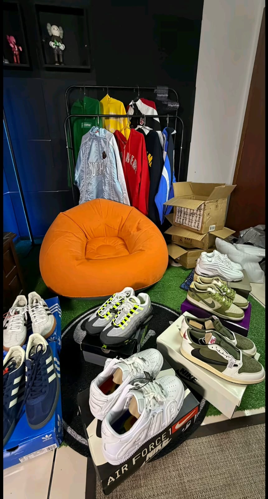
Curto explorar o mundo dos tênis e da moda urbana, buscando sempre combinações confortáveis, autênticas e com personalidade para cada ocasião.
Ver coleçãoDeve estar se perguntando como assim ele quis dizer importar diretamente da china por um preço mais acesivel e qualidade boa?
Vamos separar isso em 3 partes:
1° Encontrar o produto
2° escolher um jeito de enviar para o Brasil
3° Acompanhar o produto ate o seu endereço
Vamos ver como vou encontrar o que eu quero. No mundo das importações e você que vai importar e assumir os risco pois você esta trazendo um produto do exterior, e existe riscos.
Para encontrar o que você deseja usamos 4 sites da China para encontrar o produto: Yupoo ele é meio que uma vitrine para encontrar o que você quer, contendo imagens reais do que você vai comprar; ele serve mais para os fornecedores, mas não são todos que usam.
O 1688 é um Brás ou 25 de Março da China.
O Taobao é como se fosse um Mercado Livre e a Shopee do Brasil.
O Weidian é a mesma coisa do Taobao, mas tem um foco maior em eletrônicos.
O Xianyu, ou melhor dizendo Goofish, é como se fosse uma OLX chinesa; tem de tudo, produtos novos, usados etc.
Agora que você encontro o seu produto precisamos escolher como vamos envia-lo para o Brasil, e vamos utilizar os agentes de compras.
O que são os agentes de compras?
São sites de Agentes que são responsaveis para enviar o seu produto para o seu endereco ou para qualquer lugar do mundo
Tem vários agentes, mas os mais recomendados para o Brasil são o CSSBuy e o Hubbuy.
Cada agente tem suas configurações mas tem as mesmas propostas, Copia o link do seu produto em um desses link chineses cola na barra de pesquisa do agente, escolha o modelo ou o que seja, compre o produto no site do agente, espera chegar no armazem do agente, eles vão tirar fotos do seu produto e voce analisa se esta do seu gosto qualidade e se e realmente aquilo que voce esperava. Apos isso voce vai escolher um frete para enviar para o Brasil, outro detalhe tem que fazer o cadastro preenchendo suas informações e endereço para fazer tudo isso, Agora deve se perguntar como vou saber qual frete escolher?(O valor dos fretes são por peso)
E para isso que existe as comunidades não e so você que importa, tem varios brasileiros que tambem importam comprando varias coisas e utilizando outros agentes. A comunidade em destaque para este publico e o Discord mas tambem tem em outras plataformas como reddit e no Discord tem os servidores e so pesquisar um pouco no Youtube que voce ira encontrar alguns desses links de convite nesses videos. Ao entrar la explore a comunidade mas tem 5 abas nessas comunidades que recomendo para quem vai importa pela primeira vez que são: Compras, Review, Pacotes recebidos, Chat Geral e Dúvidas
A aba Compras e especificamente para o pessoal posta as fotos do seu produtos quando chegam no armazem deixando uma descrição deles.
O Pacotes Recebidos são para o pessoal posta os seus pacotes quando chegam nos seus endereco
O Review e para eles falarem sobre o seus produtos se valeu a pena a qualidade preço e etc.
O Chat Geral e para o pessoal da comunidade se interagir conversarem e tals.
E o Dúvidas e para os importadores tirarem suas duvidas de como importa, tudo o que eles tem em duvidas ou dificuldades e por la que o pessoal perguntam e se ajudam principalmente na escolha de fretes, qual vale a pena e mais barato quanto tempo demora etc.
Apos escolher o seu frete voce vai poder fazer o ensaio do seu pacote o que seria o ensaio?
Você vai poder escolher se o seu pacote vai com uma caixa de papelão ou somente com a embalagem que o vendedor enviou, tambem tem outras proteções que voce pode colocar que o agente disponibilza mas voce tera que pagar um valor a mais para isso.
Agora a parte que o pessoal mais tem receio a famosa declaração
Como estar trazendo um produto do exterior tem que ter uma declaração com a descrição do que voce esta trazendo e o valor que você vai declara-lo. Com base nesse valor que você vai pagar a taxa dele quando chegar no brasil
Sim você meio que decide quanto que vai pagar na sua taxa se vai ser cara ou barata, e as comunidades geralmente não te ajuda com a declaração. Ou seja e você e você
Mas tem alguns agentes que declaram para você, você so vai precisar colocar o valor que e mais facil como a Hubbuy.
Mas lembre-se NÃO existe declaração perfeita a partir do momento que voce esta trazendo algo do exterior voce esta se submetendo a riscos principalmente quando voce importa por conta propria, que e este caso
Agora a ultima parte:
Acompanhar o seu produto ate seu endereco
Apos voce pagar, deve esperar ate o agente disponibilizar o codigo de rastreio. Quando ele ficar disponivel voce deve acompanha-lo pelo site dos Correios. Mas não e la que voce vai ver as movimentações dele na china, use o site 17TRACK para acompanhar o seu pacote ate a chegada no brasil.
Apos ele chegar no Brasil ele vai passar por uma analise, apos essa analise e se for autorizada a sua importação, voce deve efetuar o pagamento da taxa, você tera 20 ou 30 dias para fazer o pagamento, caso ultrapasse esse prazo o seu produto sera devolvido ao pais de origem na china ate o armazem do seu agente dependendo do frete que escolheu.
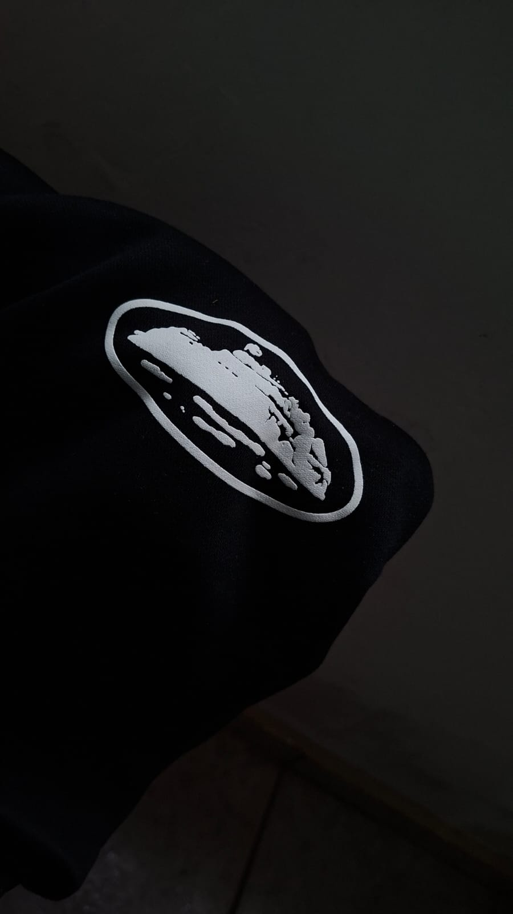
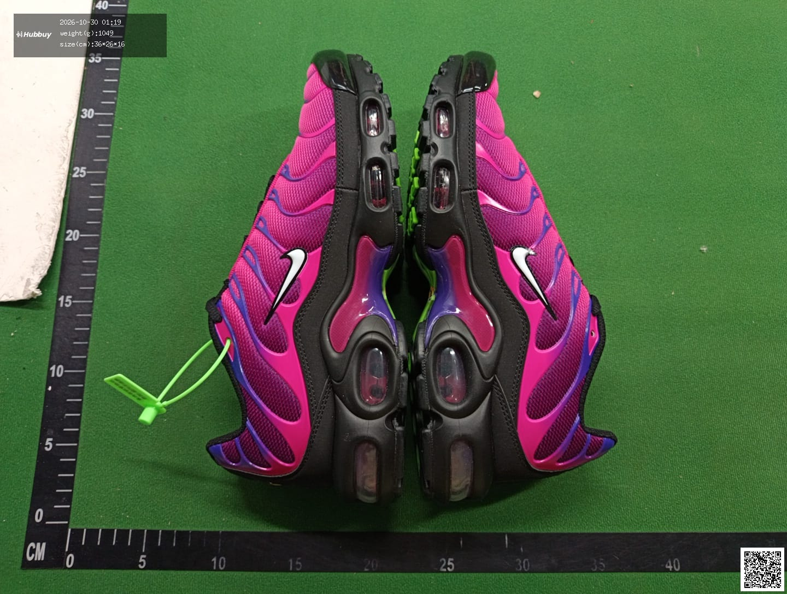
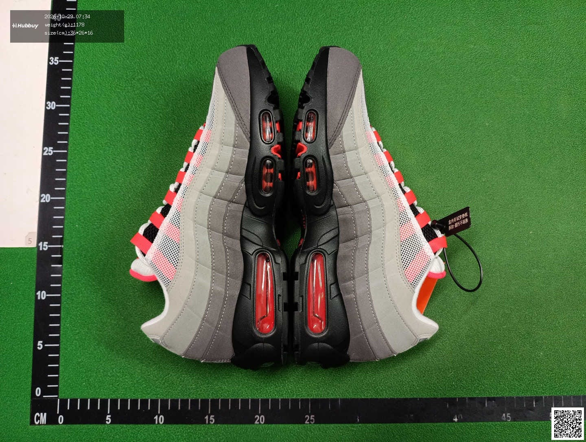
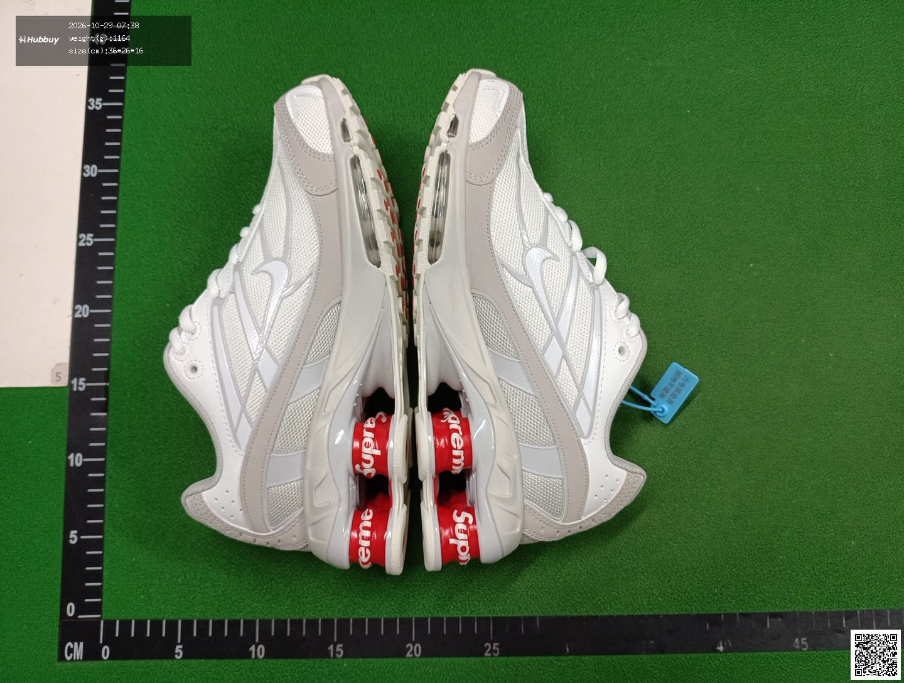
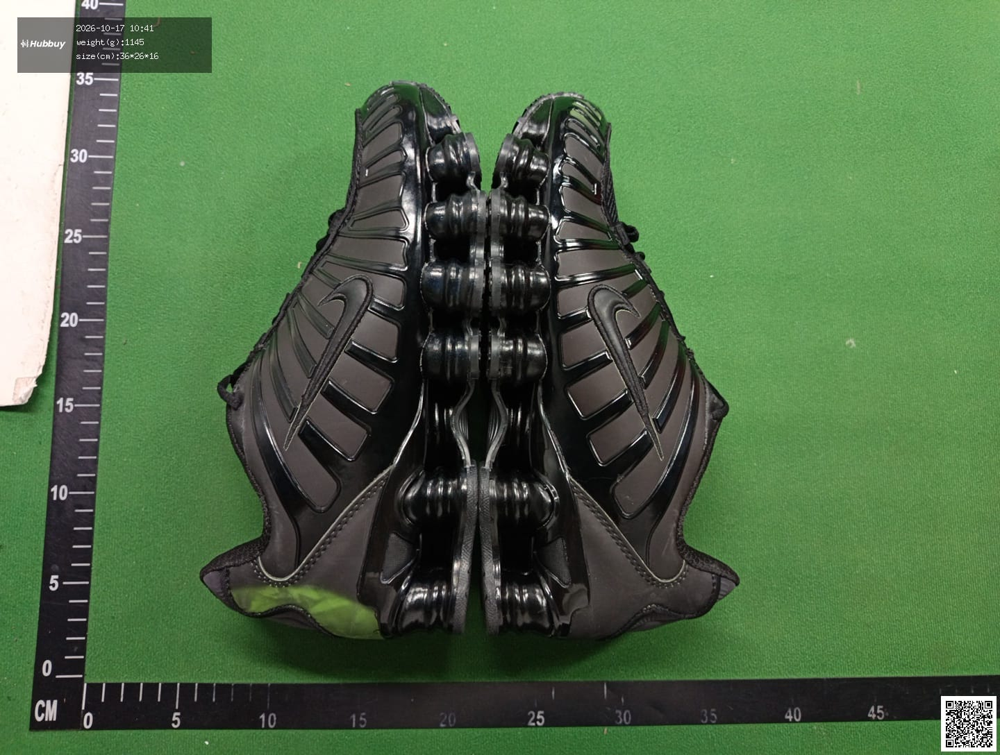
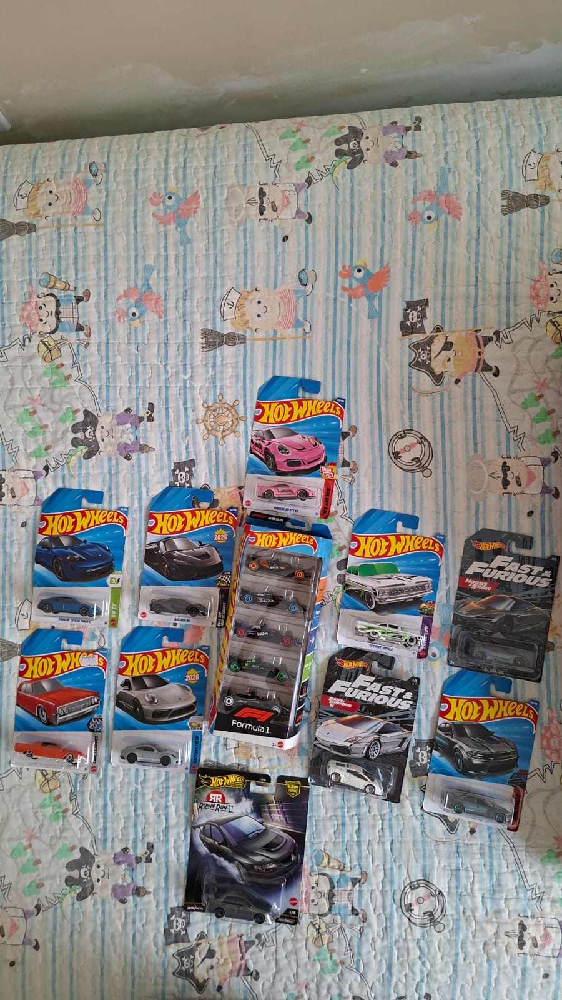
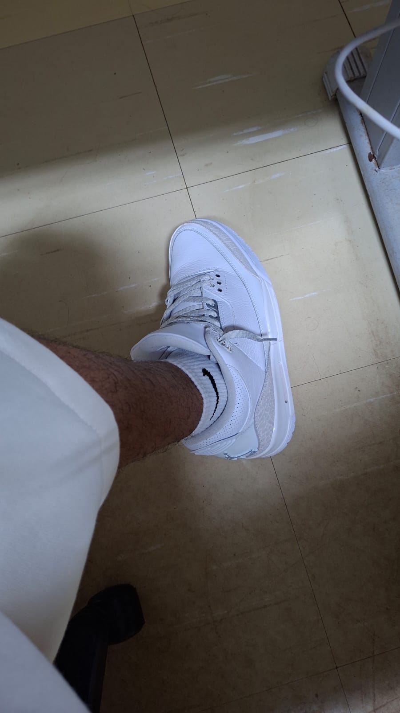
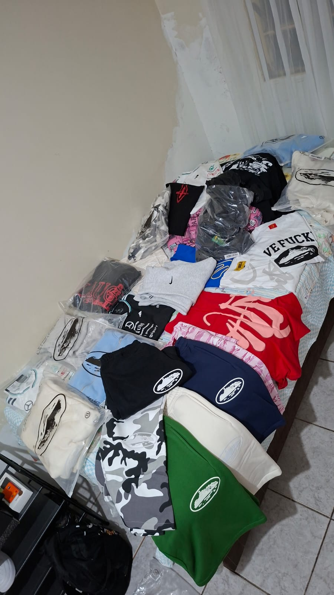
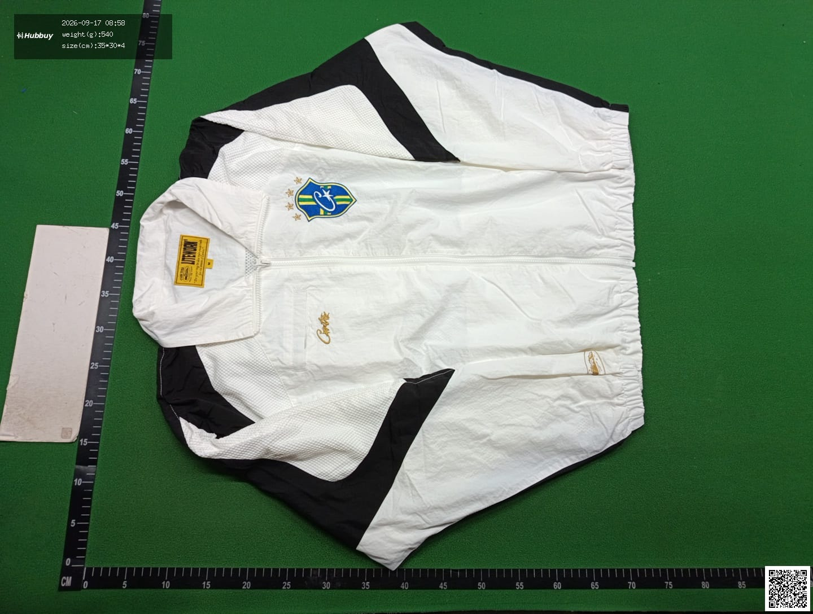
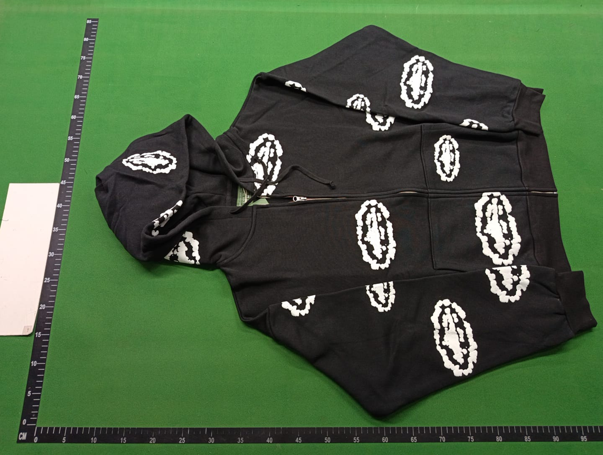
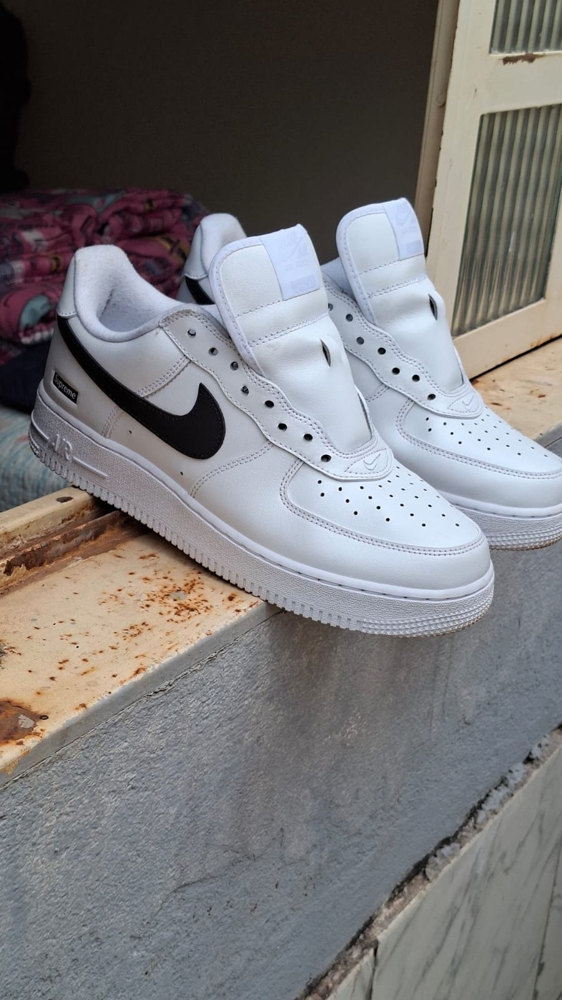
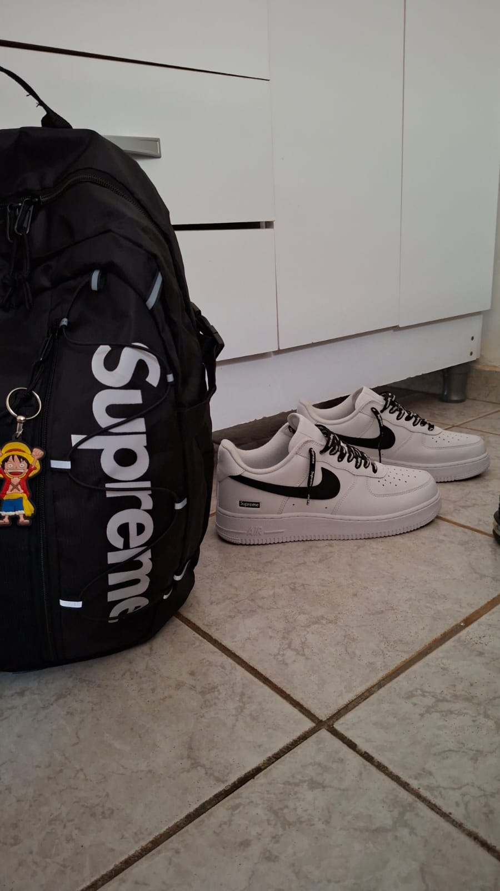
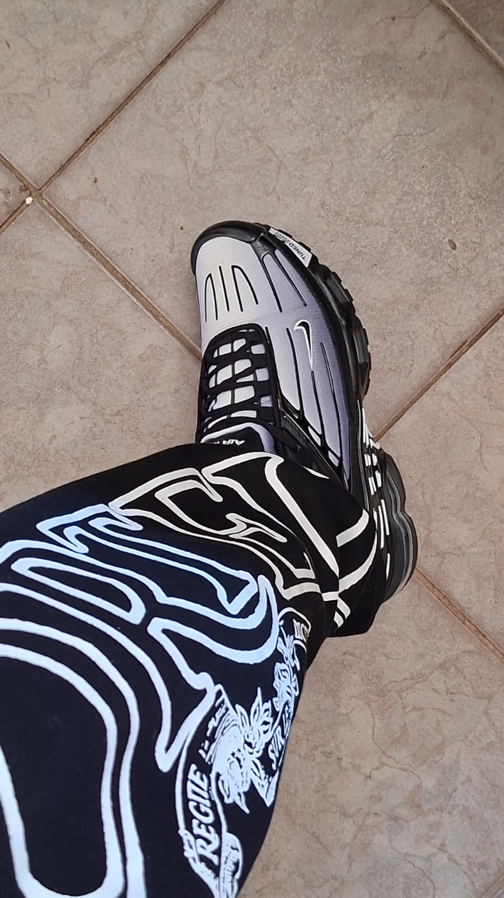
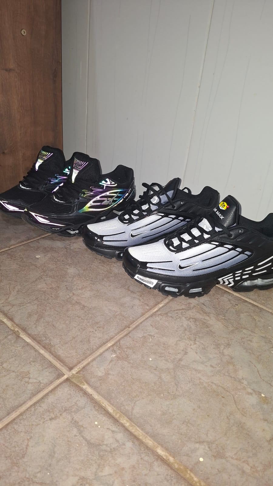